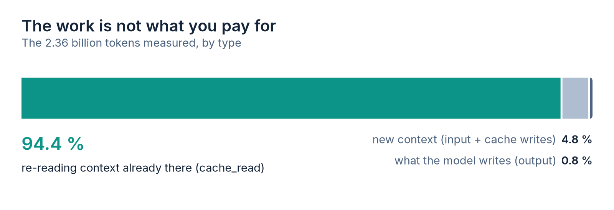
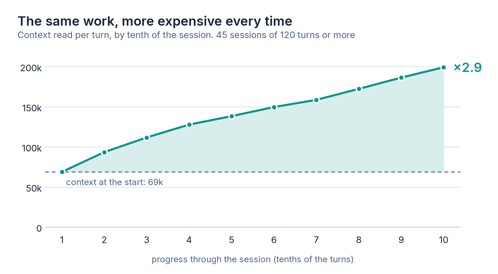
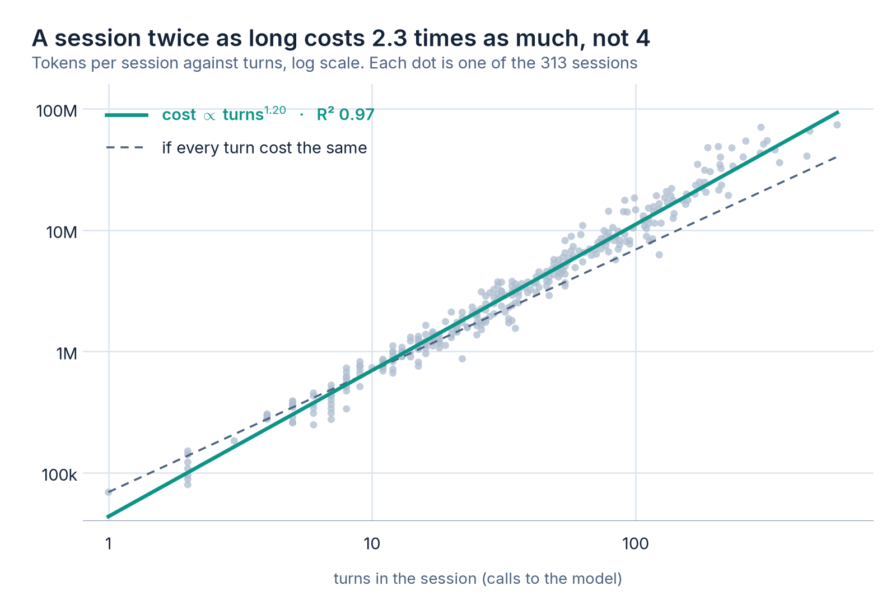
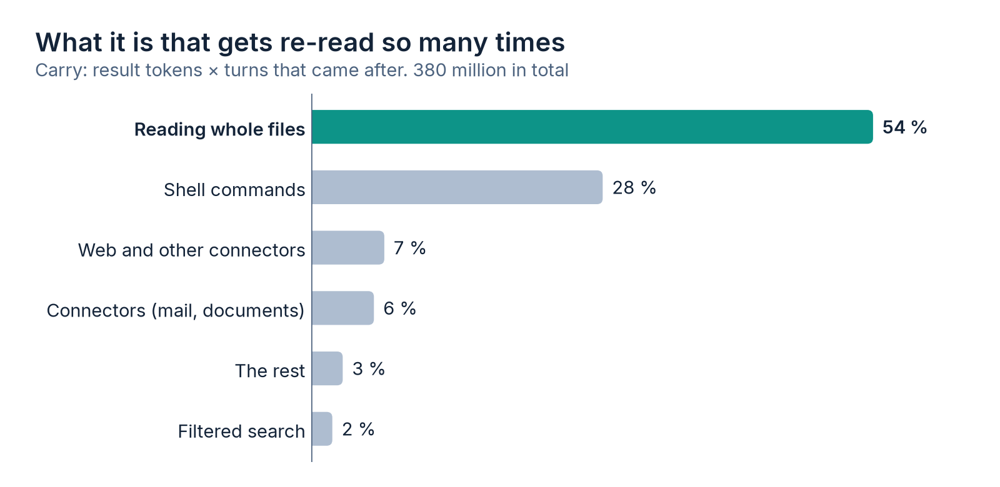

The bill started to hurt before I understood why. The work was the usual: queries against a production database, reports, some automation, email. Nothing that sounded expensive. But the consumption kept climbing and it did not match the feeling of asking for very little.
So I measured it. Coding agents store every session as a .jsonl file on disk,
with the token accounting of each call to the model. They are sitting right there, for free,
and almost nobody opens them. I wrote two scripts that read those files and answer two
different questions: how much did each session spend, and which specific call
inflated the context. What came out changed how I work, and it forced me to correct a rule
I had written down wrong myself.
First: what you pay for is not the work
The natural intuition is that an agent costs in proportion to what it produces. It is exactly the other way around. Out of 2.36 billion tokens, what the model wrote (the code, the answers, the analysis) came to 19 million. Less than one percent.

cache_read:
context that was already there and gets read again on every turn.The reason is structural, and it holds for any conversational agent, not just this one. Models have no memory between calls: on every turn the whole conversation is sent again. Turn 40 means reading the previous 39 turns one more time. Prompt caching makes that re-reading a lot cheaper, but it does not remove it, and above all it does not change the fact that the amount grows on its own while you work.
The mechanism: the same work, more expensive each time
This is the chart that organised the diagnosis. I took the 45 sessions longer than 120 turns, split each one into ten equal stretches, and averaged how much context the model read in each stretch.

A session starts out reading around 69 thousand tokens per turn and ends reading 200 thousand. Nobody asked for anything bigger at the end than at the beginning. It is the same question, with more history behind it.
Averaged over the whole curve: each turn of a long session costs close to twice what that same turn would cost with the session freshly started. That is the tax, and it is paid without ever showing up anywhere as a separate line.
What I believed, and got wrong
After the first measurement I wrote down a rule that sounded right: cost grows with the square of session length. The reasoning was clean. If context grows linearly with turns and every turn re-reads all of it, the sum is quadratic. A 300-turn session should cost five times what four 75-turn sessions cost.
When I fitted the curve against the 313 real sessions, the exponent did not come out at 2. It came out at 1.20.

The gap between 2 and 1.2 is not a blackboard detail, it changes the recommendation. At exponent 2, splitting one long session into ten saves 90 %. At 1.2 it saves about a third. Still a lot, and a third of the bill is a third of the bill, but it is a different conversation.
Why did the theory overshoot? Two things it ignored. There is a large fixed floor: the first call of every session already starts at 59 thousand tokens on median, before you type anything, because the preamble with the project instructions and the tool definitions always travels. That floor is paid by every session, short or long, and it dilutes the part that grows. And long sessions do not grow forever either: they hit the context window and the history gets compacted.
I am leaving this in because it is the part that normally does not get published: the rule I was applying came from correct reasoning on an incomplete assumption. The number corrected it. A mental model that nobody checks against their own data turns into technical folklore fairly quickly.
Where the volume comes from
Knowing that you pay for re-reading does not tell you what to stop reading. That is what the second measurement is for, and it is the one that actually drives decisions.
Every tool result (the contents of a file, the output of a command, an email search) enters the context and stays there. Its real cost is not its tokens: it is its tokens multiplied by the turns that came after it. A 20-thousand-token dump on turn 3 of an 80-turn session costs more than a 100-thousand-token one on the last turn. I call that carry, and sorting by that column instead of by size completely rearranges the list of culprits.

54 % is reading whole files. And inside that, the biggest surprise: a good part of it was not code files but the agent's own memory files. The notes you accumulate so the assistant knows how the business works. Every time one of those notes becomes relevant it gets loaded in full, and the ones I had let grow unchecked were over 9 thousand tokens each. The system that existed to make the agent more efficient was the main source of variable cost.
The pattern: filter before it enters, not after
All of the above converges on a single operating rule, and it is boringly simple: whatever enters the context is paid for many times, so it has to be filtered before it gets in. Not afterwards, not by summarising it on the next turn. Once the file is inside, the damage is done for the rest of the session.
In practice that meant writing a thin filtered-reading layer. A reader that searches by regular expression with surrounding context, with a hard character cap on what reaches the screen and the full content dumped to a temporary file in case it is needed. It is very little code and has no intellectual charm whatsoever. The effect does:
| Listing the last six emails | tokens entering the context |
|---|---|
| Standard mail connector | 2,730 (average of 190 calls) |
| Local filtered reader | 258 |
An order of magnitude, for the same data on screen. And because the saving multiplies across every turn that comes after, in a 100-turn session that single decision is around 250 thousand tokens you never pay.
The other three that stuck as habits, in order of how much they returned:
- A new session per topic. By far the biggest lever, and the hardest one to obey, because the accumulated context always looks like it is about to be useful. It almost never is, and it is paid in full on every turn until the end. In my data, the 142 sessions of 30 turns or fewer are 45 % of all sessions and 7 % of the spend; the 20 longest take 39 %.
- Large outputs go to a file, never into the conversation. A report, a table
dump, a log: to disk, and into the conversation only the summary or a
head. I found a single tool result of 132 thousand tokens in one turn; that poisons everything that follows. - Search instead of read.
grepwith line numbers and then the exact range, rather than opening the whole file to change three lines. Broad searches go to a subagent, which works in its own context and returns only the conclusion.
One I evaluated and dropped: compacting the history pre-emptively at half the window. It does save, but it compresses exactly the fine detail (precise figures, file state) and in work with production data that detail is the one thing I cannot afford to lose to a mediocre summary. It also treats the symptom. If a session is getting heavy, ending it and opening another beats summarising it blind.
How to measure your own
None of this needs special instrumentation or a vendor that hands you telemetry. The
transcripts are on your disk and they carry the usage block of every call, with
input, output and tokens read from cache. A two-hundred-line script walks them and builds the
session ranking. Another one attributes each tool result to its call and multiplies it by the
turns that followed.
What matters is not the script but the order of the questions, and there are three:
- What share of the spend is re-reading rather than producing? (If you get less than 80 %, check the measurement.)
- How much does context per turn grow within a single session, start to finish? That is the tax, and it is what decides whether cutting sessions is worth it.
- Which specific calls carry the most? That is your list of things to learn to read filtered.
Mine run with a fixed cut-off date, so the window is reproducible rather than drifting every time the script runs. Neither script is long, around two hundred lines each, and the three questions above matter more than the code: what is worth having is the ranking of your own transcripts, not mine.
Why this matters outside my machine
These measurements come from one person working at a company in southern Chile. They are not a study. But the mechanism does not depend on scale, and the companies that started putting agents to real work this year are going to run into the same thing when the first bill arrives that does not match the intuition.
What I take away is that context discipline looks far more like 1990s memory management than like prompt engineering. It is not about writing better instructions. It is about deciding, deliberately and sometimes painfully, what does not get in.
And about measuring it, because whoever does not measure their context ends up paying to read it.